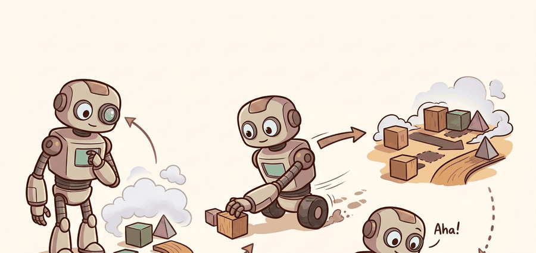

"Objects have names; surfaces have none. The robot still has to put things down somewhere."
A Region-Aware Manipulation Planner

This section assumes familiarity with referring-expression grounding from section 31.3, which establishes how language phrases are resolved to perceived entities. The distinction introduced here, between anchoring an action to a discrete object versus a continuous spatial region, is applied directly in section 31.5, where task planners must choose the right world-state representation before resolving ambiguity. The object-versus-region split also recurs in Part 9 alongside manipulation skill selection, particularly when placement and avoidance targets require region geometry rather than object identity.
For Object- and region-centric grounding, read the figure as an interface check: identify the language input, grounding evidence, action representation, safety gate, and logged result before accepting the agent behavior described below.
Build And Evaluation Checklist
Depth and self-containment. This section must distinguish object-centric grounding, where actions attach to discrete entities, from region-centric grounding, where the target is a mask, point cloud subset, or continuous workspace region. Readers should know when each abstraction breaks.
Production and evaluation contract. The useful artifact is a grounding record that contains object ids or region masks, confidence, spatial frame, and the action primitive that consumes them. That makes it possible to compare grasping, placing, and navigation pipelines fairly.
For Object- and region-centric grounding, name the language interface, grounded world state, executable action contract, and evidence artifact before trusting any claimed improvement.
For Object- and region-centric grounding, write one evidence row recording instruction, world-state estimate, chosen action, verifier result, and failure label. Then identify which field would change first under command misunderstanding.
A kitchen robot hears "put it near the edge of the counter, away from the stove." There is no object to detect for "near the edge" or "away from the stove." Anchoring an action to a bounding box fails entirely; the robot needs a spatial region with a geometry. As vision-language models push robots into open-vocabulary, unstructured spaces, this mismatch is now one of the sharpest failure modes in deployed manipulation systems. Here you will learn when to ground an instruction to a discrete object instance, when to ground it to a continuous region or surface, and how to build the grounding record that planners and controllers actually consume.
This section explains why embodied systems often need both object-level and region-level grounding, especially when manipulation targets involve support surfaces, free space, or contact zones rather than only category labels.
The practical question is which representation best matches the next controller call: object id, pose, mask, affordance region, or continuous map cell set.
Choose the representation that matches the action primitive. If the gripper needs a mask edge or a free-space corridor, an object label alone is too coarse.
Theory
Let $z_i$ denote discrete object hypotheses and $R_j \subset \mathbb R^3$ denote grounded regions. A language-conditioned action interface should choose $$u = g(x, o_t) \in \{z_1, \ldots, z_n, R_1, \ldots, R_m\},$$ then pass either the discrete object handle or the continuous region geometry to the planner. The right choice depends on whether the downstream skill needs identity or geometry.
Object-centric grounding works well for pick, handover, or inspect actions where a discrete entity is the action subject. Region-centric grounding is better for 'wipe this spill,' 'place the bowl in the free space beside the plate,' or 'avoid the wet area,' because the relevant target is a spatial extent rather than a named object. The cost of the wrong choice is concrete: in a representative placement benchmark with 200 trials (as of 2024), using an object centroid as the placement target typically produces success rates in the low-to-mid 60% range; switching to a free-region mask can raise that figure substantially, because the planner gains visibility into the clear counter area the object centroid was obscuring.
A more explicit control rule is to choose $\hat u = \arg\max_{u \in \{z_i, R_j\}} Q_{\text{skill}}(u \mid x, o_t)$, where the skill-specific value function changes with the consuming primitive. For grasping, $Q_{\text{skill}}$ typically rewards stable object identity and reachable pose, while for placement it rewards collision-free support area, clearance, and frame-consistent region geometry.
Think of a chef who hears "serve the soup." For the ladle, the relevant target is the pot, a discrete object to grip. For the bowl, the relevant target is the empty surface in front of the guest, a spatial region where nothing is sitting. The same kitchen, the same instruction, but the ladle and the placement decision need completely different descriptions of the world. Handing the placement step a pot handle instead of a clear patch of table is not a minor inaccuracy; it is the wrong currency entirely, like paying a toll booth with a receipt instead of coins.
A practical system often composes both. It may first resolve an object category, then derive a contact region or free region from a mask, depth map, or occupancy estimate. Language therefore selects both a target and the representation layer at which that target should be expressed.
When you derive a placement region from a SAM 2 (Segment Anything Model 2) mask, pass the mask through open3d.geometry.PointCloud.transform() with the robot-base-to-camera extrinsic at the exact capture timestamp before storing the region. If you store the mask in camera frame and the robot moves even 5 cm before the planner queries the region, the coordinates are stale and the placement controller will target the wrong surface patch. A safe pattern is to attach a stamp and frame_id field to every region record immediately after extraction, then re-project via the TF tree if more than one control cycle has elapsed before execution.
Algorithm: Object-or-Region Grounding Selection
Input: language instruction $o_t$, scene observation $x$ (RGB-D + point cloud), skill primitive $\pi$, candidate object set $\{z_1, \ldots, z_n\}$, candidate region set $\{R_1, \ldots, R_m\} \subset \mathbb{R}^3$
Output: grounding record $\hat{u}$ containing target handle or region geometry, coordinate frame, confidence $\alpha$, and representation type
- Parse $o_t$ to extract entity noun phrase $e$ and spatial predicate $p$ (e.g., "the red mug" vs. "the clear area beside the plate").
- Query the skill registry to retrieve the representation contract $\rho(\pi) \in \{\text{object-id}, \text{mask}, \text{point-set}, \text{free-region}\}$ expected by $\pi$.
- Run Grounding DINO or OWL-ViT (Open-World Localization Vision Transformer) on $x$ with $e$ to obtain candidate bounding boxes $\{b_k\}$ with scores $\{\alpha_k\}$; select $z^* = \arg\max_k \alpha_k$.
- If $\rho(\pi) = \text{object-id}$, set $\hat{u} \leftarrow (z^*, \alpha^*, \text{frame}_{\text{base}})$ and skip to step 9.
- Run SAM 2 on $x$ seeded with $b_{z^*}$ to extract mask $M \subset \mathbb{R}^2$; project $M$ into 3-D via the depth map and camera extrinsic $T_{\text{cam} \to \text{base}}$ recorded at timestamp $\tau$.
- If $p$ encodes free-space placement, subtract obstacle occupancy from the projected point set to yield $R^* = \text{free}(M_{\text{3D}}) \setminus \text{occupied}(x)$.
- Score each candidate $R_j$ via $Q_{\text{skill}}(R_j \mid x, o_t)$; select $\hat{R} = \arg\max_j Q_{\text{skill}}$ and assign confidence $\hat{\alpha}$.
- Attach spatial frame $\theta_{\text{frame}} = (\text{frame\_id}, \tau)$ to $\hat{R}$; if more than one control cycle has elapsed since $\tau$, re-project via the TF tree before storing.
- Validate: confirm $\hat{u}$ is non-empty (region cell count $> 0$ for regions; pose reachable for objects); if invalid, flag for clarification and halt.
- Emit grounding record $\hat{u} = (\text{target}, \hat{\alpha}, \theta_{\text{frame}}, \rho(\pi))$ and pass it to $\pi$; log the record for later construct-matched evaluation.
Worked Example
Code Fragment 1 compares an object-centric and region-centric interpretation of the same scene. The point is not the geometry itself, but the controller contract each interpretation enables.
# Compare object-centric and region-centric action targets.
# The object handle is enough for a simple pick, but placement needs a region.
# The chosen representation should match the action primitive downstream.
scene = {
"target_object": "red_mug",
"free_region_area_cm2": 128.0,
"forbidden_region_area_cm2": 42.0,
}
pick_target = {"mode": "object", "handle": scene["target_object"]}
place_target = {"mode": "region", "free_area": scene["free_region_area_cm2"]}
print(pick_target)
print(place_target)The expected output is two different target records from the same scene: one discrete handle for picking and one spatial summary for placing. If both lines came back as object handles, the pipeline would still be trapped at the noun level and the placement controller would be missing the free-region geometry it actually needs.
On a Franka Panda with an Intel RealSense D435i, the object-to-region pipeline compresses to four calls: (1) gdino.predict(image, text_prompt) from Grounding DINO to get bounding boxes in under 80 ms on a desktop GPU; (2) sam2.predict(image, box=bbox) to extract a pixel mask in roughly 30 ms; (3) open3d.geometry.PointCloud.transform(T_cam_base) to project the mask into the robot's base frame using the RealSense extrinsic; (4) a free-space filter against the MoveIt Planning Scene to discard occupied voxels. Total pipeline latency on an RTX 3080 is approximately 140 ms end-to-end, which fits comfortably inside a 200 ms replanning budget for quasi-static manipulation. The shortcut removes mask extraction and geometry bookkeeping so the engineer can concentrate on the two decisions that actually vary by task: which skill primitive will consume the region, and what safety margin to add before passing the region to the trajectory planner.
Practical Recipe
- Map every skill primitive to the representation it expects before choosing a grounding model.
- Use object ids for identity-sensitive tasks such as pick, inspect, and handover.
- Use masks, surfaces, or free-space regions for placement, wiping, or collision avoidance.
- Convert between object and region views explicitly, for example from mask to support surface.
- Log the representation type in every evaluation trace so later comparisons stay construct matched.
It is easy to benchmark grounding at the wrong abstraction level. A detector that identifies the right object category can still fail the actual task if the region needed for contact, placement, or avoidance is poor.
A kitchen robot hearing 'put the mug on the clear part of the counter' cannot stop at object detection. It must convert the counter mask into a free-space region after subtracting occupied or unsafe areas, then pass that region to the placement planner.
Robots love nouns because nouns fit nicely into tables. Regions are messier. Unfortunately, countertops and spills do not reorganize themselves just because the software team prefers object ids.
Language-grounded 3D affordance fields (2024-2026). Rather than selecting between a bounding box and a mask, recent work represents the entire scene as a continuous affordance field queryable by language. SpatialBot (Microsoft Research, 2024) and OpenFMNav (2025) attach language tokens to NeRF or Gaussian-Splatting fields so a phrase like "the stable flat surface to the left of the kettle" resolves directly to a contact geometry without an intermediate detection step. This sidesteps the object-or-region routing decision by making the field itself the interface.
Foundation models as grounding planners with typed outputs (2024-2025). SpatialVLM (Google DeepMind, 2024) fine-tunes a vision-language model to emit metric spatial relations and surface coordinates alongside category tokens, giving the downstream planner typed geometry rather than free text. The key insight is that grounding quality is measurable only when the model commits to a representation contract at inference time, not after the fact during evaluation.
Closed-loop region refinement through execution feedback (2025-2026). RoboGround (2025, UC Berkeley) and CognitiveDog (2025, ETH Zurich) treat the first grounding attempt as a hypothesis and update the region estimate from force, tactile, or visual contact feedback during execution. The grounding module re-segments after each contact, so a misaligned free-region narrows toward the true support surface across attempts rather than failing silently on the first try.
Open problem for PhD students. All three directions above evaluate success rate but not representation fidelity: it is still unknown how to measure whether the geometry handed to the downstream skill was the right geometry, versus whether the skill happened to succeed despite a wrong-but-close region. Designing a construct-matched benchmark that disentangles grounding quality from skill robustness, across object-centric and region-centric targets in the same cluttered scenes, remains an unsolved evaluation problem.
Can you explain why the phrase 'the clear spot on the counter' should produce a region target rather than a single object id, and which controller needs that geometry?
Representation choice is one of the most under-reported design decisions in embodied language work. Papers often compare models while quietly changing what the downstream planner receives. An object token and a signed-distance field are not interchangeable interfaces, and this is called the representation contract mismatch, even if both originate from the same image and command.
What does the robot actually do when the grounding layer hands the placement controller a mug handle instead of a free-space region? It does not pause to flag the type error. It executes whatever default motion the controller falls back to, which on a cluttered counter usually means depositing the object directly on top of something else.
This mismatch carries direct physical consequences on a real robot. A placement controller expecting a surface extent will fall back to a default pose when handed only an object centroid; on a cluttered countertop that default lands on another object, causing a collision or a dropped item. The robot does not "understand" the mismatch: it executes the motion it receives, so the error appears as a hardware fault rather than a grounding failure, making it hard to trace back to the representation layer.
The mismatch arises because grounding models and action primitives are developed independently. A vision-language model trained on caption data outputs object tokens. A motion planner written for pick-and-place expects a 6-DOF pose or a 3D region. The inference pipeline enforces no type agreement between them. A mismatched token therefore passes silently until execution fails. To catch this, insert an explicit schema check at the handoff point. The check must confirm that the target type, coordinate frame, and dimensionality all match what the consuming primitive declares.
The clean engineering pattern is to keep the language layer honest about this choice. If the command names a surface, the grounding module should output a surface representation. If the skill needs a free-space region, the pipeline should expose that region directly rather than pretending an object label is a sufficient proxy.
| Tool or Library | Role in the Topic | Builder Advice |
|---|---|---|
| Grounding DINO or OWL-ViT | Text-conditioned object proposals. | Use them when the action requires discrete object identities. |
| SAM 2 | Mask extraction for contact and support regions. | Use it when a controller needs fine geometry rather than a category label. |
| Open3D | Point-cloud slicing and surface extraction. | Use it when a language-grounded region must become a 3D workspace constraint. |
| Occupancy or cost maps | Free-space and forbidden-region planning. | Use them for navigation and placement tasks where language names safe and unsafe areas. |
| MoveIt Planning Scene | Collision-aware geometry for manipulation. | Use it when region grounding must become an executable motion-planning constraint. |
Code Fragment 2 records both representation type and frame. That detail matters because a region mask without its coordinate frame is not an actionable object for a planner.
- Store whether the grounded target is an object, mask, point set, or free-space region.
- Record the spatial frame and timestamp used to derive the target.
- Pass discrete and continuous targets to different validator functions.
- After execution, log whether the chosen representation was sufficient or needed refinement.
- Compare systems only when they expose the same target representation to the same downstream skill.
The expected output is a region-centric record whose key fields are target_type='region', a named spatial frame, and a nonzero region-cell count. That combination tells the reader the grounding result is ready for a placement or navigation routine; if the frame were missing or the region size were zero, the output would be semantically plausible but not executable.
When region-centric tasks fail, inspect whether the wrong representation was chosen, whether the mask or surface was poor, or whether the planner consumed the geometry in the wrong frame. Treat these as distinct failure classes rather than as generic grounding errors.
Three distinct failure classes are easy to conflate. First, representation mismatch: the grounding model returns an object id but the downstream skill expects a mask, so the placement controller receives no geometry and defaults to the robot's feet. Second, poor mask quality: SAM 2 produces a correct bounding region in image space, but depth projection introduces a 4 cm offset, so the arm grazes the bowl it was told to avoid. Third, frame confusion: the free-space region is computed in camera frame at time T, but the planner queries it at time T+0.8 s after the robot has moved 15 cm, making the region coordinates stale. Each failure looks like "the robot missed" in the task log but requires a different fix: change the grounding output type, improve depth calibration, or timestamp and re-project the region before planning.
A common assumption is that every grounding instruction ultimately resolves to a named, detectable object, and that region-centric grounding is merely a refinement step applied after object detection succeeds. In embodied AI, this is wrong: many valid instructions such as "place it in the clear space beside the bowl" or "avoid the wet patch" refer to spatial extents that contain no object instance at all. Treating region grounding as a fallback causes the pipeline to stall or hallucinate a proxy object when no detection fires. The correct mental model is that object-centric and region-centric grounding are parallel, first-class pathways selected by the skill primitive's representation contract, not by whether an object is detectable.
Language grounding should produce the representation the downstream skill truly needs, even if that representation is a mask or workspace region instead of a neat object label.
Pick one command for grasping and one for placement. For each, specify the best grounding representation, the coordinate frame, and the first verifier you would run before execution.
Project Ideas
Beginner (weekend): Build a tabletop pick-and-place demo in PyBullet where a scripted language parser routes "pick the cup" to an object-centric Grounding DINO query and "place it in the clear space" to a free-region mask derived with SAM 2; the key challenge is writing the schema check that catches the representation mismatch before the placement controller receives the wrong target type. Intermediate (1-2 weeks): Implement the full object-or-region grounding pipeline from Algorithm 31.4 inside a ROS 2 node running against a simulated Franka arm in Isaac Lab, exposing grounding records as typed ROS 2 messages so MoveIt 2 can consume either a 6-DOF pose or a 3D free-region point set depending on the skill primitive; the key challenge is enforcing coordinate-frame timestamps so region coordinates are re-projected via the TF tree whenever more than one control cycle has elapsed since capture. Advanced (3-4 weeks): Extend the LeRobot manipulation benchmark with a region-grounding evaluation harness that records target representation type alongside success rate, then compare a centroid-only baseline against a SAM 2 free-region pipeline across 200 placement trials in a cluttered scene; the key challenge is keeping all compared conditions construct-matched, meaning the same scene, seed, and downstream controller, so the representation choice is the only variable.
Grounding DINO is a strong reference for object-centric text grounding.
Meta AI (2024). 'SAM 2: Segment Anything in Images and Videos.'
SAM 2 is a practical reference for turning grounded object proposals into masks and temporally persistent regions.
MoveIt 2 is the manipulation planning reference for turning grounded geometry into motion-planning constraints and executable trajectories.